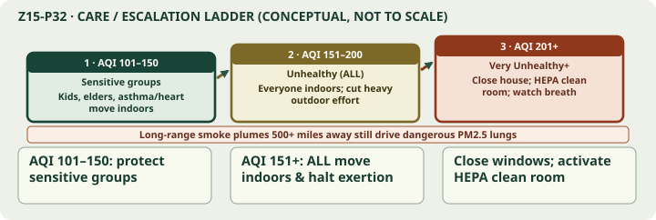

Z15-P32 · Disaster scenarios · New manuscript
Use live AirNow AQI categories to protect lungs from regional wildfire smoke
Scale outdoor exertion, indoor filtration, and vulnerable-person protections objectively using official PM2.5 Air Quality Index readings.
When it applies · Local wildfires AND long-range Canadian/western smoke plumes routinely blanketing Minnesota and the Upper Midwest.
Equipment · Official AirNow.gov / local air-quality alerts, indoor clean-room HEPA purifier, and own prescribed asthma/heart inhalers.

Actions
- Check live official AirNow AQI (PM2.5) readings rather than relying only on haze appearance: Moderate (51–100) alerts unusually sensitive groups; Unhealthy for Sensitive Groups (101–150) moves children, older adults, pregnant individuals, and people with asthma/heart/lung disease indoors; Unhealthy (151–200) and Very Unhealthy / Hazardous (201+) require EVERYONE to move indoors, close windows, and cancel heavy outdoor exertion.[D06]
- Cut heavy outdoor running, yard work, and sports immediately as AQI climbs—strenuous breathing pulls deep fine PM2.5 particles far deeper into lung alveoli and bloodstream than quiet indoor rest.[D06]
- Keep windows, doors, and fresh-air HVAC intakes tightly closed during high-AQI plumes, switching immediately to indoor clean-room filtration and keeping personal prescribed rescue inhalers at hand.[D06, D07, M08]
Failure recognition · Holding outdoor youth soccer practice or heavy wood-splitting in Purple "Very Unhealthy" (AQI 230) smoke haze because "the fire is 500 miles away."[D06]
Verify · Confirm official AirNow AQI checked, outdoor exertion scaled back/cancelled at thresholds, windows shut, and vulnerable members monitored.[D06, D07]
Stop or change course · Wheezing, persistent cough, chest tightness, shortness of breath, or dizziness during smoke events requires clean indoor air immediately and 911/clinical evaluation.[D06, M08, T02]
Evidence and editorial notes
- D06 · US EPA / AirNow · Wildfires and Air Quality (current web edition)
- Section: Wildfires and Air Quality > AQI Categories and Exposure Reduction · Conditions: Regional or local wildfire smoke plumes impacting air quality
Support: Monitor live official AirNow AQI readings and local health advisories; move indoors with windows/doors closed during Unhealthy AQI levels, limit heavy exertion, and use properly fitted NIOSH-approved N95/P100 particulate respirators if essential outdoor exposure cannot be avoided.
Limitations: Surgical masks, bandanas, and dust masks do not seal against fine PM2.5 wildfire smoke particles; N95s do not protect against carbon monoxide or low oxygen. · Conflicting evidence: None; complements C19 and READY-WILDFIRE.
Editorial note: Grounds AQI smoke thresholds and respiratory protection limits in Z15. · Specialist reviewer: Environmental health and air-quality specialist
Primary source · checked 2026-11-24 - D07 · US EPA · Create a Clean Room to Protect Indoor Air Quality During a Wildfire (current web edition)
- Section: Create a Clean Room > Indoor Filtration and Recirculation Setup · Conditions: Households sheltering indoors during multi-day wildfire smoke events
Support: Designate an interior room with few doors/windows, run a properly sized portable HEPA air cleaner (avoiding ozone generators) or set HVAC to recirculate with a MERV-13 filter if system-compatible, and avoid indoor combustion (candles, gas stoves, vacuuming without HEPA) that adds particulates.
Limitations: During simultaneous extreme heat and smoke, cooling takes priority if indoor temperatures become dangerous—relocate to a public clean-air cooling center. · Conflicting evidence: None; addresses compound smoke-plus-heat emergencies.
Editorial note: Core indoor clean-room assembly and compound-hazard card evidence. · Specialist reviewer: Indoor air quality and public health
Primary source · checked 2026-11-24 - M08 · AHA and American Red Cross · 2024 Guidelines for First Aid (2024)
- Section: Anaphylaxis · Conditions: Suspected severe allergic reaction; community first aid; prescribed epinephrine or applicable local protocol
Support: Activate EMS promptly and assist with epinephrine under the relevant device or action plan. Follow professional direction for subsequent care.
Limitations: Pediatric device selection, subsequent dose, timing and transfer require product, patient and local protocol. · Conflicting evidence: See A02 claim audit for boundaries.
Editorial note: Separates assisting with a patient's prescribed auto-injector from lay prescribing. · Specialist reviewer: Allergy/immunology and EMS
Primary source · checked 2026-11-25 - T02 · American Red Cross · First Aid Steps (current web edition)
- Section: First Aid Steps > Call 9-1-1 · Conditions: Lay emergency response to unresponsiveness, abnormal breathing or severe bleeding
Support: Activate EMS and get needed equipment. Follow dispatcher directions and act within training.
Limitations: Remote locations may delay EMS arrival, requiring sustained stabilization after activation. · Conflicting evidence: None; aligns with NPS-E.
Editorial note: Mandates early emergency activation and dispatcher adherence. · Specialist reviewer: EMS and wilderness medicine
Primary source · checked 2026-11-24
Source lineage · US EPA AirNow Wildfires; new manuscript · Classification · New manuscript.